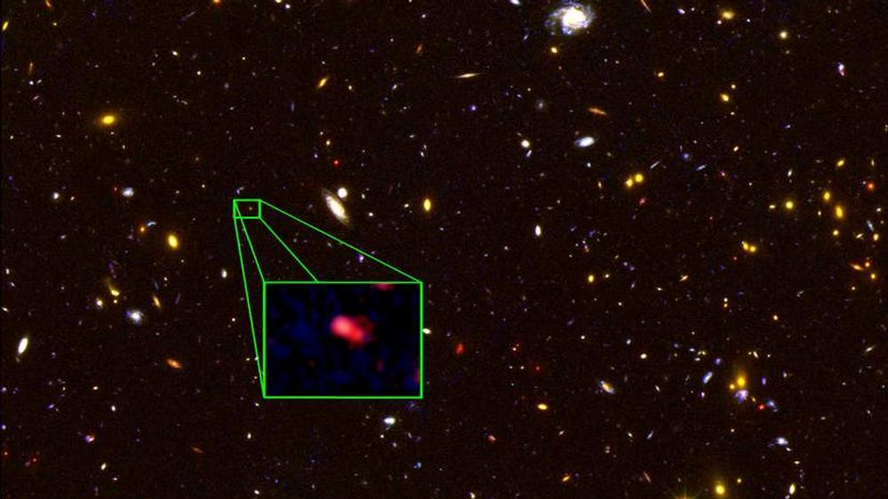
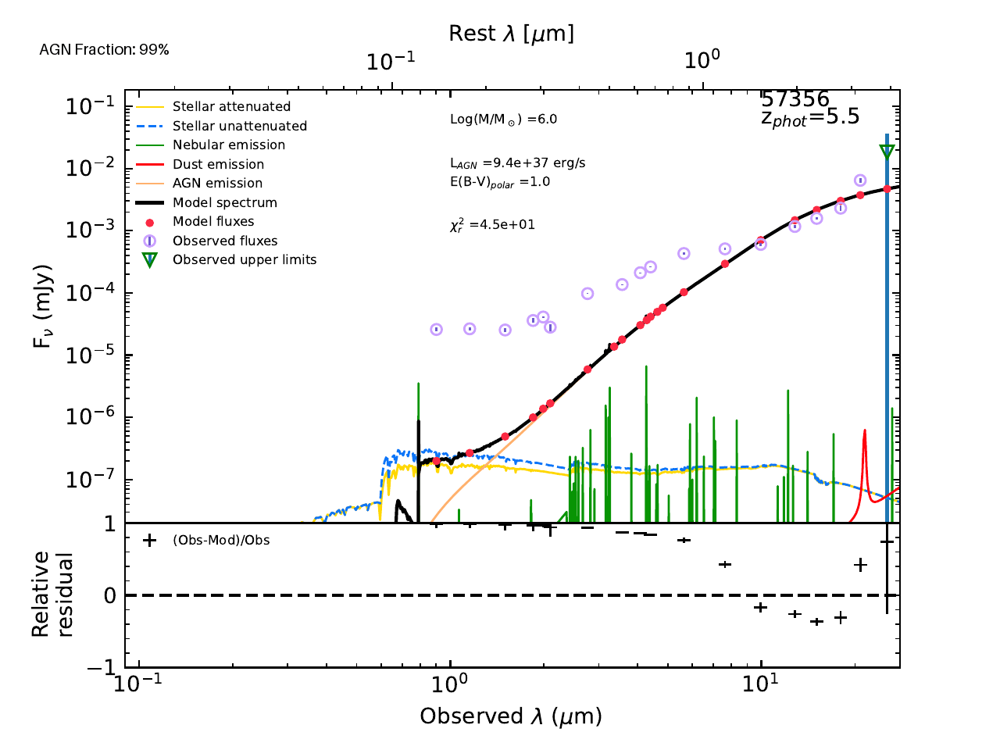

My Research Projects
Explore the research projects I've worked on by clicking on the panels below.
What is the nature of Little Red Dots?
We explore the morphology of high redshift optically red high galaxies between 5 < z < 8.
The history of Sag A*
We use outputs from the Illustris-TNG simulation to explore the mass history of the (undermassive) super massive black hole at the center of the Milky Way galaxy
Search for DCBH galaxies
We used archival Hubble Space Telescope data to find candidate Direct Collapse Black Hole galaxies at z = 6.
Measuring Stellar Variability
We analayzed the .
Exploring the AGN Fraction of a Sample of JWST's Little Red Dots at 4 < z < 8:
Overmassive Black Holes Are Strongly Favored

Background: Little Red Dots (LRD) are a class of high redshift (5 < z < 9), optically red, compact galaxies observed by the
James Webb Space Telescope. The redshift range occupied by these galaxies makes them valuable to the field of galaxy evolution, as they are likley progenitors
of the massive galaxies we observe in the universe today. Various analysis of LRD have revealed some peculiar characteristics, such as high stellar masses given their compact nature,
overmassive black holes (in the case where LRD are AGN or host AGN), x-ray quiet, undetected in the infrared, Hα emission (with little to no Hβ emission), and the list goes on.
Our work here focuses on the result that suggests LRD host overmassive black holes. We wanted to determine if this result is agnostic to the
parameter choice made during SED modeling. Specifically, we wanted to understand how different choices in how the AGN contribution is modeled affects the
final black hole mass.

Methodology:
Using James Webb Space Telescope photometry presented in Perez-Gonzalez+23, we model the SED of LRD
as either AGN, galaxy, or a composite model of both templates to determine the nature of these optically red, compact, high redshift galaxies.
SED modelling is a technique where we are able to individually model the different components of a galaxy that come together to form the
emission we observe. Depending on the resulting contribution from each component, we can extract the likely nature of the galaxy star forming, AGN or composite.
We used the publicly availble CIGALE SED modeling code from Boquien+23, to analyze the Litle Red Dot photometry.
We varied the AGN contribution from 0% to maximal 99%, allowing us to test all three scenarios (AGN, galaxy, composite).
Results: Through this analysis, we became the first group to show that the overmassive black hole result from LRD is dependent on the strength of the AGN contribution.
For LRD hosting a modest AGN < 20%, the black hole mass is in agreement with the local Reines+Volonteri+15 relationship, while > 20% implies an overmassive
black hole. An AGN contribution between 20% and 40% corresponds to a moderately overmassive black hole, while > 40% results in extremely overmassive black holes,
favoring the Pacucci+23 high redshift relationship.
There are more interesting results in the paper, which can be found here.
Second year project: How does a black hole grow: An analysis using the Illustris TNG simulation
 More information to come soon!
More information to come soon!
Search for DCBH galaxies using HST
More information to come soon!
Measuring Stellar Variability
More information to come soon!